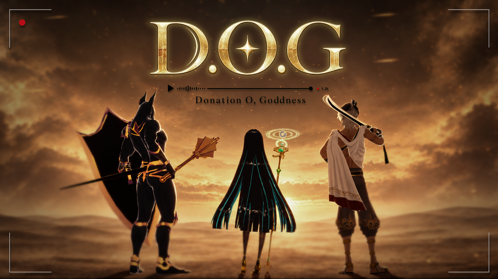
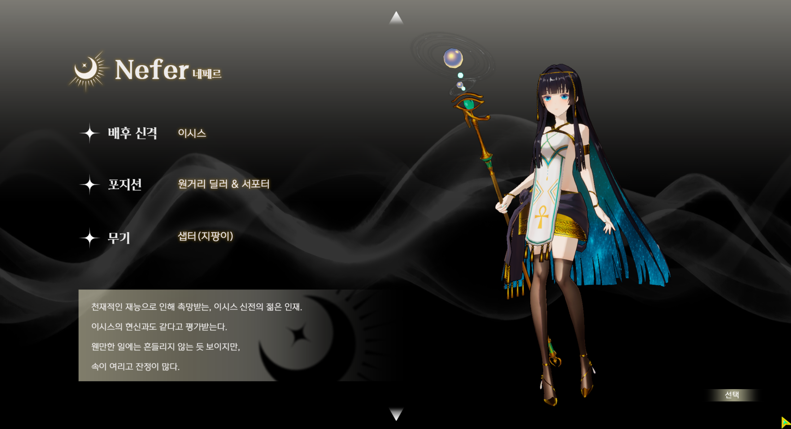
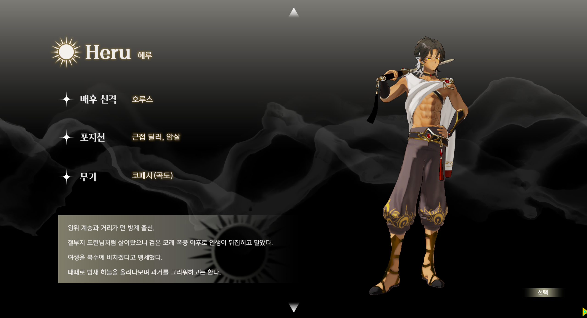
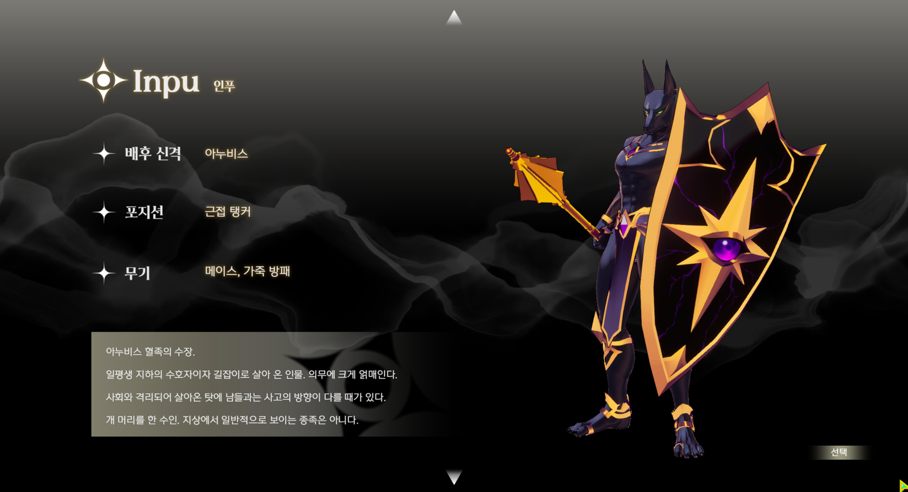

전투와 퍼즐
- 사막의 적과 싸우고, 고대 신전의 퍼즐을 풀며, 더욱 강하게 캐릭터를 성장시키세요.
- 여정의 끝에서 강력한 보스 몬스터와 대적해, 위기에 처한 이집트를 구원하세요.
이집트 신화와 스트리밍 방송을 결합한, 독특한 컨셉의 핵 앤 슬래시 협동 RPG
💡 게임 체험 후 설문조사 참여 시 선착순 200분께 커피 기프티콘을 드립니다!
(설문조사 링크)

이집트 신화와 스트리밍 방송을 결합한, 독특한 컨셉의 핵 앤 슬래시 협동 RPG
| 분류 | 내용 |
|---|---|
| 장르 | 3인 협동 액션 RPG |
| 배경 | 이집트 신화 기반 판타지 |
| 목표 | 동료와 함께 성장하고 악신 세트에 맞서기 |
| 핵심 재미 | 세트 격파를 위한 협동 & 신의 후원금을 더 많이 얻기 위한 경쟁 |
D.O.G는 '영웅의 여정을 수호하는 신'을 '영웅의 방송을 시청하고 후원하는 신'으로 재해석했습니다.
당신은 악신을 물리치기 위해 나선 원정대원이자 신이라는 시청자를 가진 스트리머입니다.
| 행동 | 키 |
|---|---|
| 이동 | W · A · S · D |
| 기본 공격 | 마우스 왼쪽 버튼 |
| 카메라 회전 / 확대·축소 | 마우스 오른쪽 버튼 드래그 / 휠 |
| 카메라 고정 | L |
| 스킬 | Q · E · R · C |
| 대시 | Shift |
| 점프 | Space |
| 상호작용 | F |
| 인벤토리 | I |
| 신 페이지 | G |


